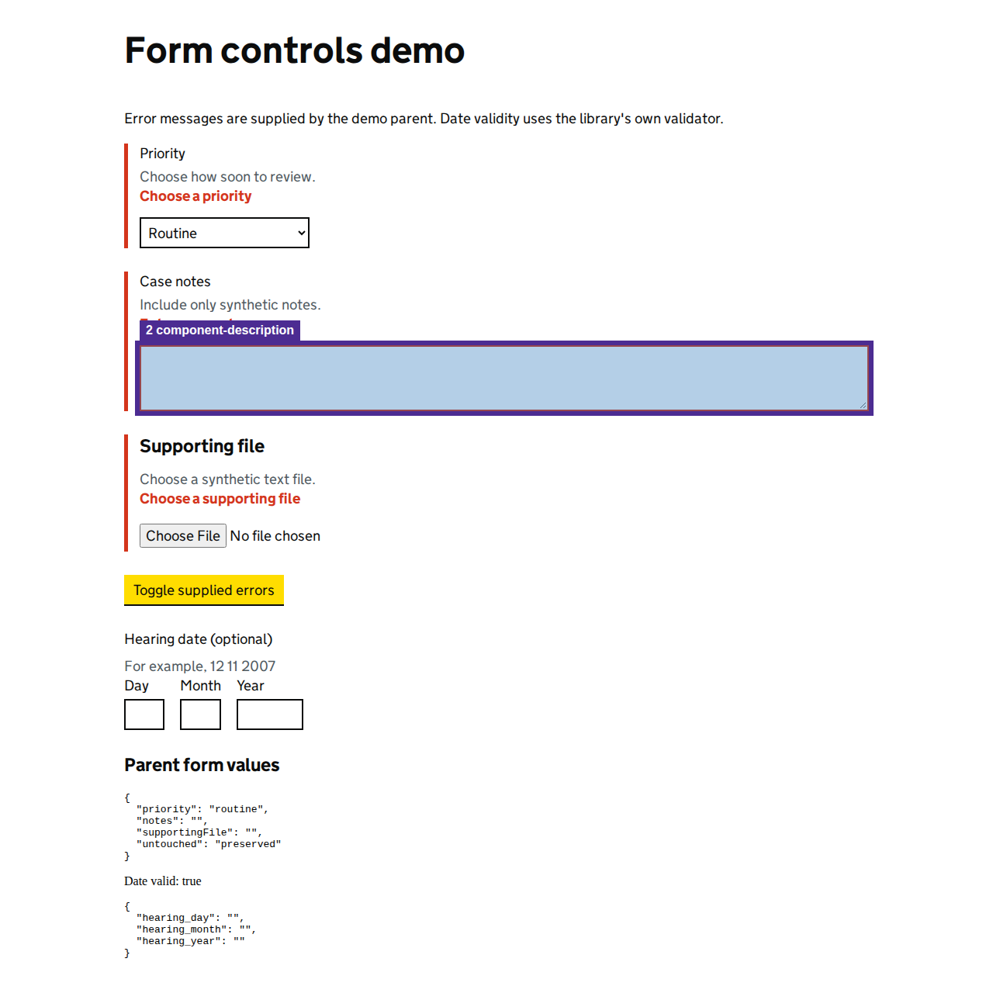

Automated heuristics support investigation; they do not replace screen-reader testing or establish WCAG conformance.
View page screenshot

1. aria-reference-target
aria-describedby references missing id(s): case-notes-hint.
Selector: #case-notes
Inspect DOM snippet
<textarea name="more-detail" class="govuk-textarea ng-untouched ng-pristine ng-valid govuk-textarea--error" id="case-notes" rows="3" aria-describedby="case-notes-hint case-notes-error" style=""></textarea>
2. component-description
Expected #case-notes-hint text "Include only synthetic notes.", received missing target.
Selector: #case-notes
Inspect DOM snippet
<textarea name="more-detail" class="govuk-textarea ng-untouched ng-pristine ng-valid govuk-textarea--error" id="case-notes" rows="3" aria-describedby="case-notes-hint case-notes-error" style=""></textarea>